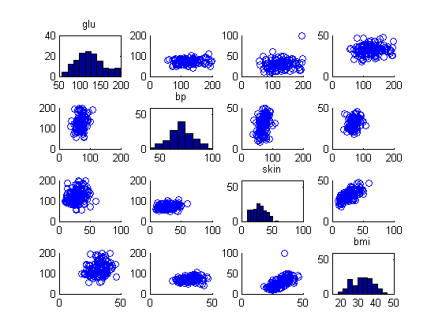
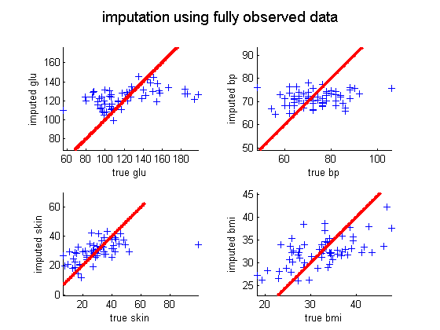
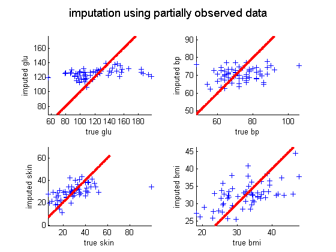

Impute missing entries of the 4d Pima Indians data using an MVN
setSeed(0);
D = loadData('pimatr');
pima = D.data;
pima = pima(:,3:6);
pimaNan = pima;
[n,p] = size(pima);
probMissing = 0.3;
miss = unifrndPMTK(0,1,size(pima));
miss(miss < probMissing) = 0;
pimaNan(miss == 0) = NaN;
mu = nanmeanPMTK(pimaNan)';
titles = {'glu','bp','skin','bmi'};
ax = {[50,200,0,40],[40,100,0,60],[0,100,0,60],[15,50,0,60]};
figure; subplot(4,4,1);
for row=1:p
for col=1:p
subplot(4,4,(row-1)*4+col);
if(row == col)
hist(pimaNan(:,row)); title(titles{row}); axis(ax{row})
else
scatter(pimaNan(:,row),pima(:,col))
end
end
end
fittedModel{1} = struct('mu', mean(pima), 'Sigma', cov(pima));
fittedModel{2} = gaussMissingFitEm(pimaNan, 'verbose', true);
for i = 1:length(fittedModel)
pimaImputed{i} = gaussImpute(fittedModel{i}, pimaNan);
mse(i) = sum(sum(pimaImputed{i} - pima).^2)/numel(pimaImputed);
end
fitMethodNames = {'fully observed', 'partially observed'};
feature = {'glu', 'bp', 'skin', 'bmi'};
for mod = 1:length(fittedModel)
figure;
for j = 1:p
subplot(2,2,j); hold on;
ndx = miss(:,j)==0;
p1 = plot(pima(ndx,j), pimaImputed{mod}(ndx,j),'b+');
xlabel(sprintf('true %s', feature{j}));
ylabel(sprintf('imputed %s', feature{j}));
axis equal
V = axis; lowLim = max(V(1),V(3)); upLim = min(V(2),V(4));
plot(lowLim:0.1:upLim, lowLim:0.1:upLim, 'r', 'linewidth', 3);
end
suptitle(sprintf('imputation using %s data', fitMethodNames{mod}));
end
printPmtkFigure pima-realvsimputed
initializing model for EM
1 loglik: -2475.88
2 loglik: -2269.29
3 loglik: -2171.52
4 loglik: -2134.9
5 loglik: -2123.48
6 loglik: -2120
7 loglik: -2118.95
8 loglik: -2118.64
9 loglik: -2118.55
  